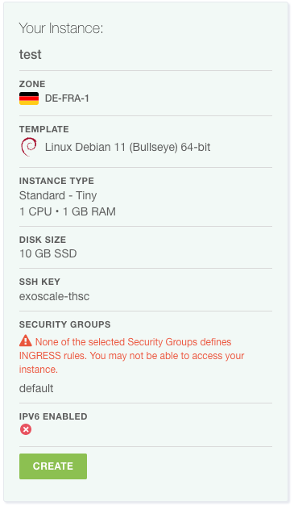

Spin up a Virtual machine in Exoscale using the UI
Prerequisites
SSH Client installed (OpenSSH, PuTTY)
Goal:
You should be able to provision a Virtual Machine using the Exoscale UI
Furthermore, you should get familiar a bit with Virtual Instances and things you can configure
We will deploy the Virtual Machine via the Exoscale UI. Therefore, open the Exoscale Console and Log In with your credentials.
Create an SSH Key
You might want to be able to access your Virtual Machine after it is provisioned. Therefore, we need to preccreate an SSH Key which can be used to access this machine.
This SSH Key has to be created on your machine. On Linux, Mac or WSL machines, this should work as follows:
Open a shell (bash, zsh)
Run ssh-keygen -t ed25519 -f exoscale (and remember where you ran this!)
Use a passphrase
Open the public part of the key (exoscale.pub) and copy it.
The public part of the SSH Keypair has to be stored in Exoscale to make it usable in Virtual Machines. Therefore, select "Compute" -> "SSH-Keys" -> "Add", assign a name you remember to the key and paste the public part.
Provision the Virtual Machine
With this, we should have everything we need to provision a virtual machine.
Select "Compute" -> "Instances" and click on "Add"
Assign a meaningful Hostname to your Instance
Use "Linux Debian 64-bit" as Template
Select the zone of your choice
Choose the Instance Type "small"
10GB Storage will fit our needs
Select the Keypair you created before
Leave the IPv6 Options unchecked and the User Data Field Empty
Check your Configuration (as below and click on "Create")

You will see a new screen, where your virtual instance is shown. After some times, it will get into a "running" state
Make your self familiar with the information and options on this screen
Adding a Security Group
To add the security group, select "Security Groups" in the "Compute" menu:
Add a new security group ("Add"):
Name: Public Access and "Create Group"
On the Security Groups Overview Page, click on the three dots on the right side of the instance row and "Details"
Add a new Rule
Select "SSH"
Now you should see your new rule there
In a real world scenario you would make sure that only your IP address could access the SSH port
To assign the security group, open the instances screen, and select your instance
Click on "Security Groups"
Attach your Security Group
Retry accessing your machine via SSH now
This should work now
Access the Virtual Machine via SSH
In our lab, we want to install software and therefore, it is beneficial to have shell access. Now it's time to remember where you stored the private ssh key. When you found it, open up your shell and execute:
ssh -i {{path-to-your-private-key}} debian@{{ip-address-of-your-instance}} (you can find the ip address on the instance screen)
You will find out that you are not able to connect to the machine. This is due to a missing security group.